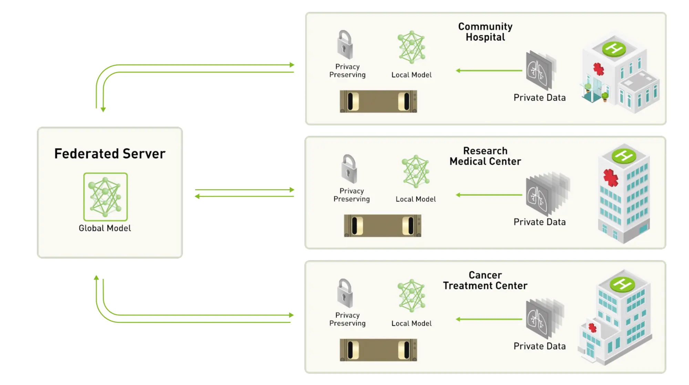
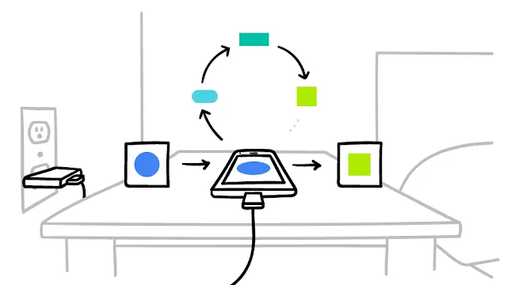
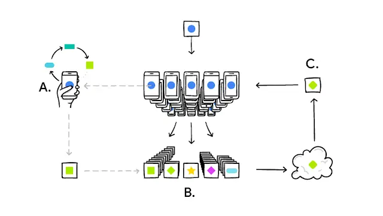

বাংলায় Federated Learning
রাফি, নাফি, শাফি তিন বন্ধু। তুখোড় ব্রিলিয়ান্ট তিনজনই। গ্র্যাজুয়েশন হলো কদিন আগে, এখন নিজদের পায়ে দাড়ানোর পালা। যুগের সাথে তাল মিলাতে মাথায় ভূত চেপেছে আর্টিফিশিয়াল ইন্টেলিজেন্সের। কেমন হয়, যদি একটা বাংলা পার্সোনাল এসিস্ট্যান্ট এপ বানানো যায়?
এপ হয়েও গেলো দেখতে দেখতে, কোম্পানি লঞ্চও হলো। সবাই খুব পছন্দও করলো। সমস্যা শুরু তারপর। সাধারণভাবে, মেশিন লার্নিং মডেল রান করতে দরকার। যতো বেশি এবং যত ডাইভার্সিফাইড ডেটা, তত ভালো। আর মডেলগুলো রান হয়, সেন্ট্রালি, কোম্পানির সার্ভারে। সমস্যা কী তাহলে? এতো পার্সোনাল ডেটা কোম্পানির সার্ভারে রাখতে অনেক কাস্টোমারই ভয় পাচ্ছে, যদি লিক হয়ে যায়? রাফি ভাবলো, আচ্ছা, এতো ডেটা যদি না নেই? ডেটা ছাড়া মডেল ইম্প্রুভ করবি কীভাবে? শাফির জবাব। আমরাও একটু ভাবি, কী করা যায়? ডেটা কম নেয়া পসিবল না। কিন্তু আমার মডেল ট্রেইন করাতে হবে। উপায় একটা আছে! কী সেটা? আমরা ডেটাগুলো যদি আমাদের সার্ভারে না আনি, তাহলেই তো হচ্ছে, তাইনা? সার্ভারে না আনলে লিক হওয়ার ঝামেলা নাই, হলেও আমাদের কাধে আসছে না এর দায়! নাফি বললো। আমরা যদি কোনোভাবে ইউজারদের মোবাইলেই মডেলটা রান করায়ে ফেলি? তাহলে, তো আর সার্ভারে ডেটা নেয়া লাগলো না, মডেলও ইম্প্রুভ হলো! শুনতে কিছুটা ইন্টারেস্টিং আর ভীতিকর লাগছে তাইনা? এটাই ফেদেরেটেড লার্নিং!

ফেদেরেটেড লার্নিং (nVIDIA Blog)
ইন্টারেস্টিং কেনো?
আইডিয়াটা মজার। সেন্ট্রাল সিস্টেম, তথা সব ডেটা সার্ভারে নিয়ে সেন্ট্রালি মডেল ট্রেইন না করে, বিভিন্ন ডিভাইসে ডিভাইসে রান করাবো। আর, পরে প্যারামিটারগুলা এনক্রিপডেট অবস্থায় সার্ভারে নিয়ে নিবো। একটা ডি-সেন্ট্রালাইজড মেথডে শিফট হচ্ছে প্রসেসটা। ভীতিকর কেনো? বা রে! আমার ফোনে ও মডেল চালাবে! মেশিন লার্নিং মডেলে তো অনেক পাওয়ার লাগে, গ্রাফিকস প্রসেসিং লাগে। আমার ব্যাটারির চার্জ? আমার ফোনের হায়াতও তো কমে যাবে!
আসলেই কী তাই? এবার একটু বিস্তারিত জানি কীভাবে এটা কাজ করে, আমাদের লাভ-লস আসলেই কিছু আছে কিনা!
ফেদেরেটেড লার্নিং কী?
একটা মেশিন লার্নিং মডেলের পারফমেন্স অনেকটুকুই নির্ভর করে তার ট্রেনিং ডেটার উপর। ডেটা যত রেলেভেন্ট হয়, তত ভালো। আর সবচেয়ে রেলেভেন্ট ডেটা কোথায় থাকে? ইউজারদের ডিভাইসে। এখন ডিভাইসে থাকা ডেটাই আমি সেন্ট্রাল সাভারে না এনে ডিভাইসেই রান করে সেটার মাধ্যমে আমার মেইন মডেল ইম্প্রুভ করার কাজ করতে পারি। এটাই হলো ফেদেরেটেড লার্নিং। আমরা সেন্ট্রালাইজড মডেল ট্রেইন করবো ডিসেন্ট্রালাইজড ডেটায়। আমাদের ফোনেই মডেল রান হলে, ফোনে ব্যাটারির চার্জ? নাহ, ব্যাটারির চার্জে সমস্যা হবেনা। যখন ভালো চার্জ থাকবে ফোনে, চার্জড অবস্থায় থাকবে এন্ড কোনো কাজ করছিনা এমন, তখন এপটা মডেল চালায়ে প্যারামিটার গুলা সেভ করে বসে থাকবে। পরে ইন্টারনেট সংযোগ পেলে টুক করে মেইন সার্ভারে পাঠিয়ে দিবে। মাত্র ১-২ মিনিটেই ট্রেইন হয়ে যাবে এ মডেল।

অলস ফোনে মডেল ট্রেইন হচ্ছে (Google AI Blog)
সব ফোনেই হবে?
নাহ। প্রতিবার কিছু সিলেক্টেড ডিভাইসে হবে। মেইন সার্ভার মডেল এসব প্ল্যান করবে কাকে কখন কি ট্রেইনের কাজ দেয়া যায়। সে হিসেবে কয়েক মেগাবাইটের ছোটো একটা মডেল পাঠাবে ফোনে। ফোনের এপ সেটা পেয়ে পার্ফেক্ট টাইমের অপেক্ষায় থাকবে। পেলে ১-২ মিনিটেই ট্রেইন করে প্যারামিটারগুলা সেন্ট্রাল সার্ভারে পাঠায়ে দিয়ে সব ডিলিট করে ফেলবে। আসল ডেটা সার্ভারে যাবে না!
আচ্ছা, ডেটা ট্রান্সফারের সময় চুরি হলে?
না! তাও হবেনা! ফুল এনক্রিপটেড থাকবে! তারপর, সার্ভার ডিভাইস থেকে ট্রেইনড ডেটা পাওয়ার পর সেগুলো একসাথে করে ডিক্রিপ্ট করবে। এ টেকনোলজির নাম ‘সিকিউর এগ্রেগেশন’। এতে আগে এনক্রিপটেড ডেটাগুলো একত্র করে পরে ডিক্রিপ্ট করা হয়। এতে সার্ভার নিজেও জানতে পারেনা কোন প্যারামিটার কোন ডিভাইস থেকে এসেছে। তারপর প্যারামিটারগুলা এনালাইজ করে সে নিজের মেইন মডেল আপডেট করে নেয়। তাহলে, ফেদেরেটেড লার্নিং এর মাধ্যমে কোনো ডেটা লিক ছাড়াই, কারো কোনো ক্ষয়ক্ষতি ছাড়াই, আরো ভালো রোবাস্ট মডেল রেডি হবে! ডেটা ডিভাইসে থাকায় একদম লেটেস্ট ডেটা সে ইউজ করতে পারবে; লাখ লাখ ইউজার থেকে একসাথে এভাবে শিখতে পারলে মডেল খুব দ্রুতই আরো ভালো পারফর্ম করবে।

ফেদেরেটেড লার্নিং (Google AI Blog)
উপরের ছবিতে যদি দেখি এখানে A প্রান্তে আছে আমাদের ইউজার, B তে তার ডিভাইস। C তে আমাদের সার্ভারে মেইন মডেল। মেইন মডেল সার্ভার থেকে একটা করে মডেল পাঠাবে ডিভাইসে। ডিভাইস সেটা ট্রেইন করবে। তার নিজস্ব ডেটা অনুযায়ী মডেলের প্যারামিটারগুলো ভিন্ন ভিন্ন আসবে। সেগুলো একত্র করে মেইন মডেল নিজেকে আপডেট করে নিবে। যেনো বায়াস বা ওভারফিটিং না হয়, সেজন্য প্রয়োজনমতো ফাংশনস চেঞ্জ করা যাবে মেইন মডেলে।
কোথায় কোথায় ব্যবহার করা যেতে পারে?
সেলফ ড্রাইভিং কারে প্রথমত। আমার গাড়ি কোথায় কখন ছিল, এ ডেটা গাড়ির কোম্পানির সার্ভারে রাখতে কে চায়? এটা খুবই পার্সোনাল ইনফো ও বিশাল সিকিউরিটির প্রশ্ন! কিন্তু, আমার তো রেগুলার আপডেট করা চাই মডেল! উপায়? ফেদেরেটেড লার্নিং! গাড়িতেই মডেল ট্রেইন হয়ে ইনফো সার্ভারে গিয়ে মেইন মডেল ইম্প্রুভ হয়ে যাবে কোনো পার্সোনাল ইনফো লিকের কোনো সম্ভাবনা ছাড়াই! হাসপাতালে রোগ নির্ণয়ের কোনো মডেল নিয়ে কাজ করলে এটা খুব ভালো অপশন হতে পারে! এমাজন এলেক্সা হতে পারে! বা, হালের জনপ্রিয় চ্যাটজিপিটি-তেই এরকম কিছু করা যেতে পারে!
কীভাবে এলো এই প্রযুক্তি এবং এখন কোথায় ব্যবহার হচ্ছে?
২০১৭ সালে টেক-জায়ান্ট গুগল ফেদেরেটেড লার্নিং ইন্ট্রোডিউস করে। এরপর থেকে গুগল এক্টিবলি কাজ করে যাচ্ছে এটার পেছনে। গুগল তার গুগল কিবোর্ডে এখন ইউজ করছে এটা। কখন? আমরা গুগল সার্চ করলে সাজেশনস দেখায় অনেক, তাইনা? এ ইনফো-টা সেভ করে রাখে বডেল যে, আমরা কোন সাজেশনে ক্লিক করছি। পরে এ ডেটা দিয়ে ফেদেরেটেড মেথডে সে মেইন মডেলে আপডেট করে, যেন পরেরবার আরো ভালো সাজেশন দেখাতে পারে!

গুগল কিবোর্ডে ফেদেরেটেড লার্নিং
তাছাড়াও গুগল কিবোর্ডে ইমোজি প্রিডিকশন, নেক্সট ওয়ার্ড প্রিডিকশনসহ আরো নানা কাজে ব্যবহৃত হচ্ছে এ প্রযুক্তি! তারপর গুগল পিক্সেলের ফোনের Now Playing ফিচারও ফেদেরেটেড লার্নিং সাপোর্টেড। গুগল স্পিচেও এ প্রযুক্তি ব্যবহার করছে গুগল।
সবই বুঝলাম, কিন্তু নামটা Federated Learning কেনো? Federation শব্দটা চেনা লাগে? আমরা সবাই-ই শুনেছি, তাইনা? ফেডারেশন কী? একাধিক মানুষের কম্বিনেশন, ক্লাবের মতো। এখানেও মেইন মডেলটা অনেকগুলা ছোট মডেলের কম্বিনেশন থেকে শিখে খুব দ্রুত এন্ড ইফিসিয়েন্টলি। একটা ফেডারেশনের মতোই অনেকগুলো ডিভাইস একসাথে মিলে কোলাবোরেশনের মাধ্যমে মেশিন লার্নিং মডেল ট্রেইন করার কাজ করে বলে। তাই এর নাম Federated Learning! আর এজন্যই, দশে মিলে করি কাজ, হারি জিতি নাহি লাজ!
Share this article
Copyright © 2025 Azmine Toushik Wasi. All rights reserved.